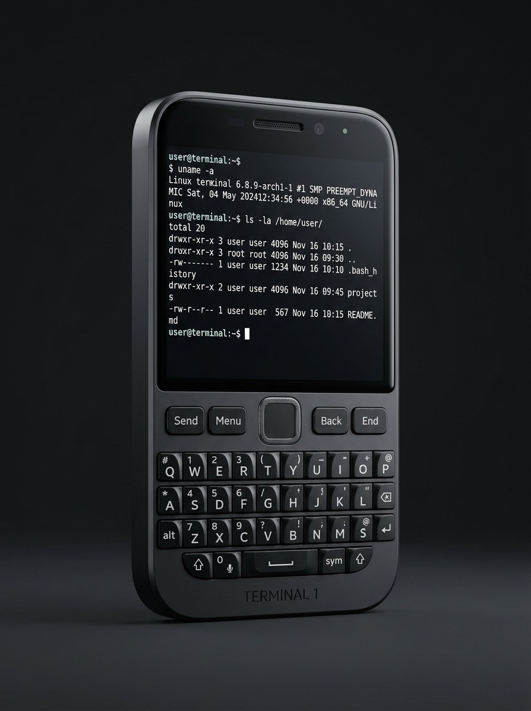
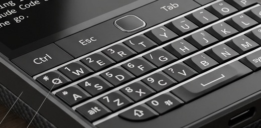

Raspberry Pi Compute Module 4
Four Arm Cortex-A72 cores, plenty for a shell and a compiler. Small enough to sit behind the screen, cool enough for a pocket.
- 4 GB memory · 32 GB eMMC
- Wi-Fi and Bluetooth on board
Terminal 1
A square screen. A real keyboard. Linux, and nothing else. An open-source pocket terminal for SSH, az login and Claude Code — wherever you are.

Terminal 1 does one job, and does it well: working in a shell. SSH into a server. Sign in to Azure. Pair with Claude Code. Everyday Linux, on the train, in a queue, away from the desk.
A 4-inch, 720 × 720 panel holds 90 columns by 45 rows. Enough for a real prompt, a tmux split or a diff — and not one pixel spent on anything else.
A genuine BlackBerry Q20 keyboard with its trackpad, read by our own firmware on an RP2040. Typing at a prompt feels the way it should: precise, quiet and fast — no glass, no guesswork.

The phone keys above the keyboard become Ctrl, Esc, Tab and Fn. Ctrl-R through history, Esc in vim, Tab to complete — one press each.
Swipe to walk shell history, move the cursor along a long command, step through a menu or hop between tmux panes. No pointer to chase.
Tap Ctrl, then C. Tap Fn, then a key. Modifiers wait for the next key press, so shortcuts never need a three-finger stretch.
A Fn layer puts pipes, tildes, backticks, braces and function keys a tap away. The firmware is open, so the layout is yours to change.
Simplified stack, front to back. Not to scale.
Four Arm Cortex-A72 cores, plenty for a shell and a compiler. Small enough to sit behind the screen, cool enough for a pocket.
Holds the CM4, drives the display, keeps time with its own real-time clock and routes the antenna to the radio window.
An RP2040 reads the keys and trackpad and talks to Linux over USB. The same board charges the battery and turns the power button into a clean shutdown.

A matte black aluminium mid-frame carries the load and draws heat away from the processor. The back is woven carbon fibre: light, stiff and quietly beautiful.
Carbon also stops radio waves, so the top of the back is a radio window. Wi-Fi and Bluetooth get out; the weave stays.
Of terminal use on a charge.
Estimate, to be measuredOne protected lithium-polymer cell, 4,000–4,500 mAh, under the keyboard.
Charge from the cable you already carry. The power button shuts Linux down cleanly — no corrupted cards, no surprises.
No launcher, no app store, no notifications. Terminal 1 starts straight into a full-screen terminal and gets out of the way.
The enclosure is modelled in Onshape with FeatureScript, driven by the same numbers as the circuit boards. Drag to look around; open the live CAD to see every part.
Drag to turn · Pinch or scroll to zoom
3D model coming with the first CAD export
Targets for the first prototype. Anything marked est. is an estimate until it’s measured.
4-inch square IPS720 × 720 pixels, MIPI DSI
90 × 45 charactersFull-screen terminal
BlackBerry Q20 keyboardWith trackpad, as a replacement part
RP2040 firmwareCtrl, Esc, Tab, Fn · sticky modifiers · trackpad as arrow keys
Raspberry Pi CM4Quad-core Arm Cortex-A72
4 GB · 32 GBMemory · eMMC storage
Wi-Fi and BluetoothFrom the CM4, through a radio window in the back
Mobile dataNot in Terminal 1 — planned for Terminal 2
4,000–4,500 mAhSingle protected Li-Po cell
4–6 hest.Terminal use per charge
USB-CCharging · clean shutdown from the power button
84 × 150 × 19 mmest.Width × height × depth
250–300 gtargetTo be weighed
Aluminium mid-frameMatte black
Carbon fibre backWith radio window
64-bit LinuxBoots straight to the terminal
cage + footzsh and tmux · OpenSSH, Azure CLI, Claude Code
Carrier board74 × 72 mm, 4 layers, KiCad
Keyboard and power board74 × 66 mm, 2 layers, KiCad
Nothing has been built or tested yet. Figures come from datasheets and hand calculations and will change as the prototype is measured. BlackBerry is a trademark of its owner; Terminal 1 uses the Q20 keyboard as a part and is not affiliated with or endorsed by BlackBerry.
Terminal 1 is designed together with an AI coding assistant, Claude Code. The plans, the CAD FeatureScript, the schematics, the firmware — and this website — start as conversations. A person reviews every change before it lands.
There’s no device to buy and no prototype on a desk. This is a plan, with CAD, schematics and firmware in progress.
Battery life, size and weight are targets until they’re measured — and they’ll be updated here when they are.
AI-generated, to show the idea. Not photographs of hardware.
Every design choice gets a short decision record, so you can see what was chosen and why — and argue with it.
~/terminal-1 ❯ claude ✻ Welcome to Claude Code > The FFC between the boards needs 6 contacts for 5 V at 3 A. Update the pinout everywhere. ● Read system/plan/interfaces.md ● Update pins 2–7 to +5V_CM4 ● Update hardware/carrier-board schematic ● Update hardware/keyboard-board schematic ● Add a decision record Ready for review. 4 files changed. A human reads the diff before it merges.
Six phases, each with a gate it has to pass before the next one counts. Weeks are estimates; the gates aren’t.
Weeks 1–3
Gate: SSH, az login and Claude Code from the bench keyboard.
Weeks 3–6
Gate: reliable typing, safe charging, and the power button shuts Linux down cleanly.
Weeks 6–12
Gate: boots from battery with the screen and Wi-Fi working.
Weeks 8–14 · printed shells, then the aluminium mid-frame and carbon back
Gate: fits a jacket pocket, stays cool, and Wi-Fi works with the back fitted.
Weeks 14–18
Gate: two weeks without reaching for the laptop.
Next
A mobile modem, a bigger battery and an optional CM5.
The CAD, the circuit boards, the firmware, the Linux setup and the documents are all public. Build one, change it, or help make the first one real.
Strongly reciprocal open hardware. Make and sell it; share your changes to the design.
Use it anywhere, for anything. Keep the notice.
Share and adapt the docs, with credit, under the same terms.
Onshape FeatureScript for the frame, back and printed shells.
Open in Onshape ↗ KiCadReview the carrier and keyboard-and-power schematics and layouts.
hardware/ › FirmwareKey matrix, trackpad, sticky modifiers, Fn layer and power handling.
firmware/ › LinuxBoot to cage and foot, display and keyboard drivers, power management.
linux/ › DocsBuild guides, decision records, photos and fixing what’s unclear.
docs/ ›Start with one labelled good first issue, or open one for anything that looks wrong.
Comment on the issue so nobody duplicates the work, and ask anything.
Send a focused pull request. AI-assisted work is welcome; tell us, and check it yourself.
Bigger design changes get a short decision record in docs/decisions.